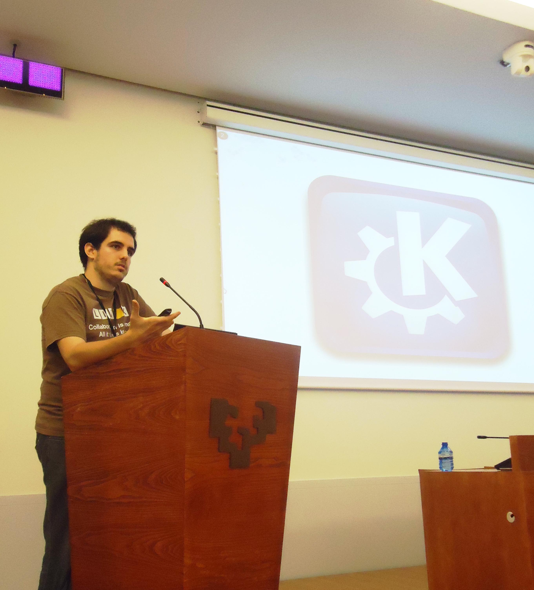
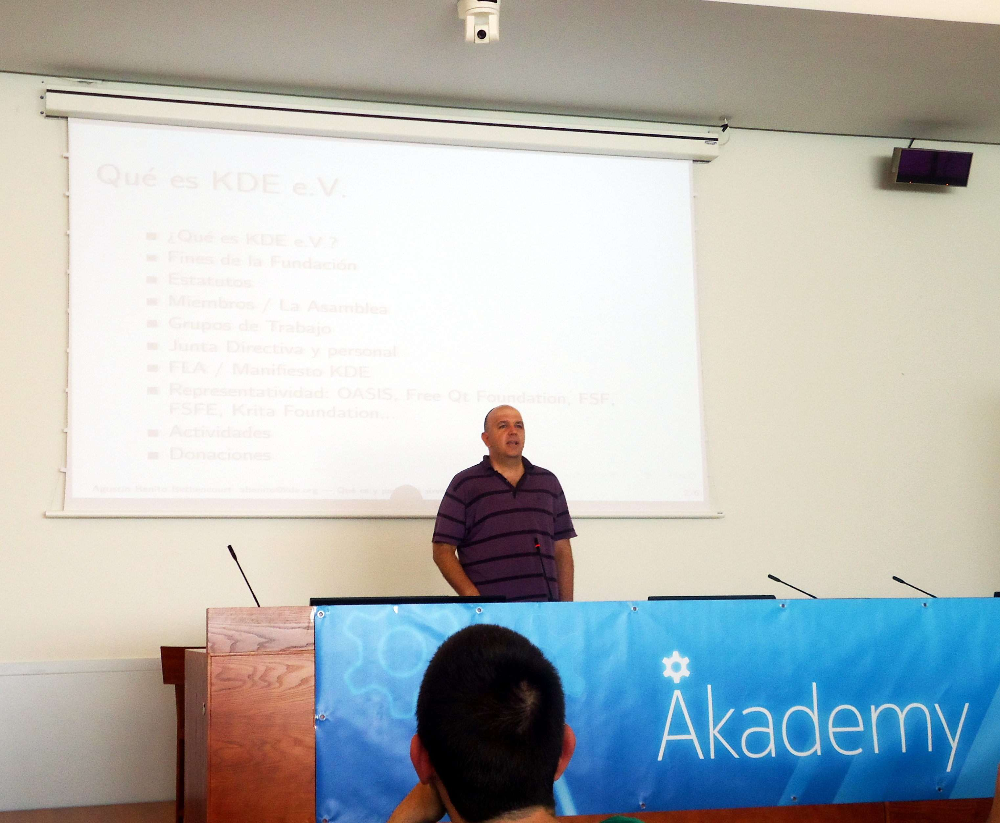
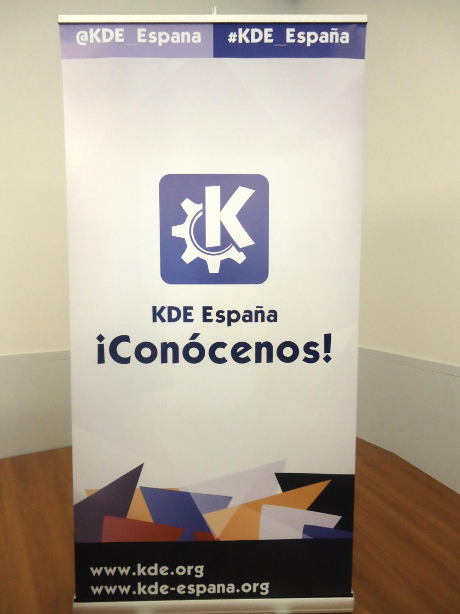
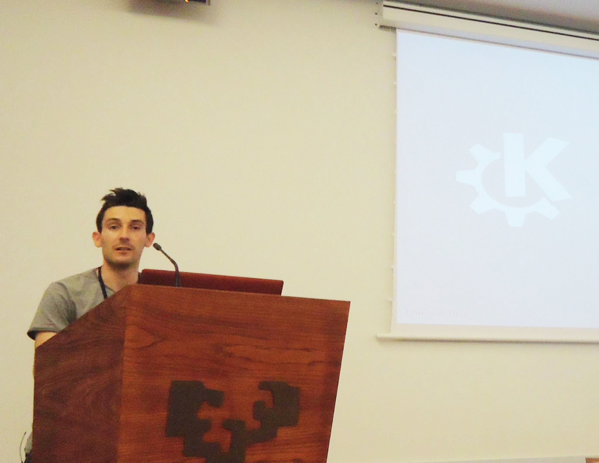
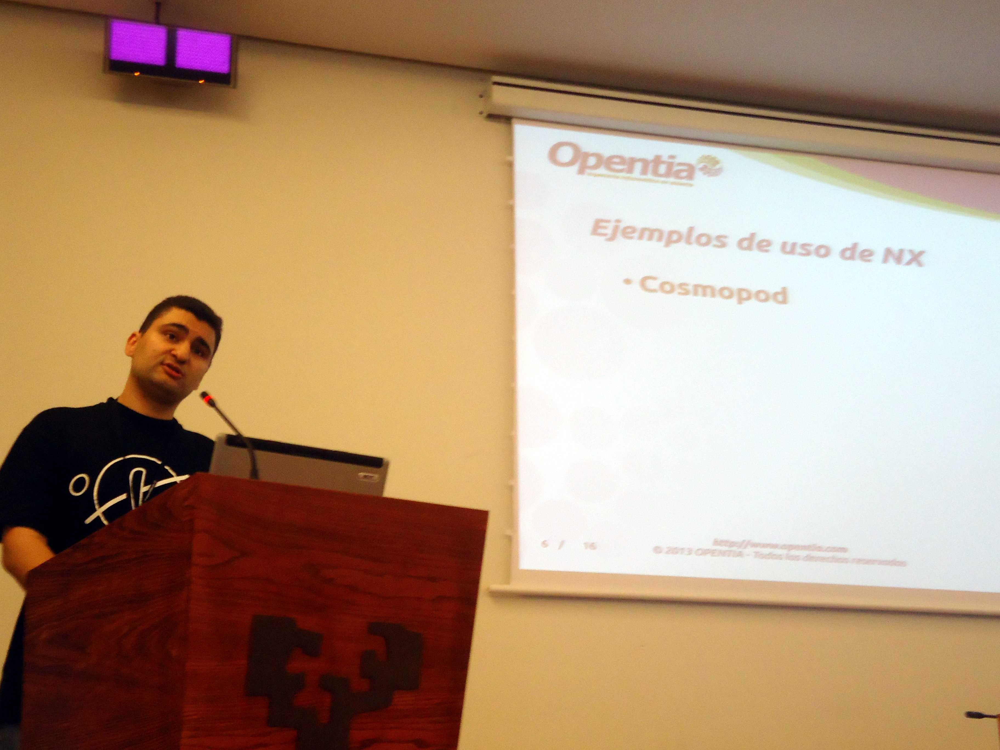
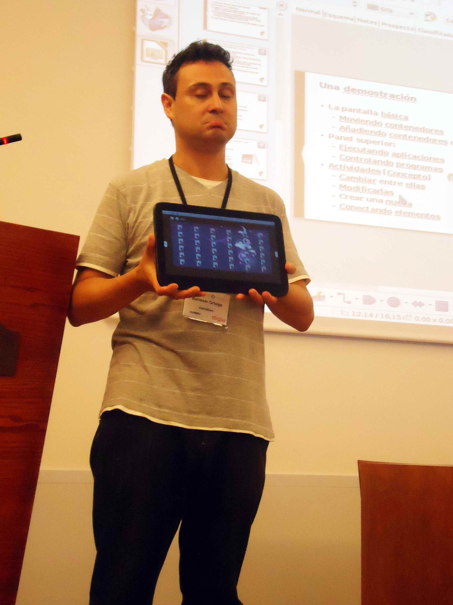
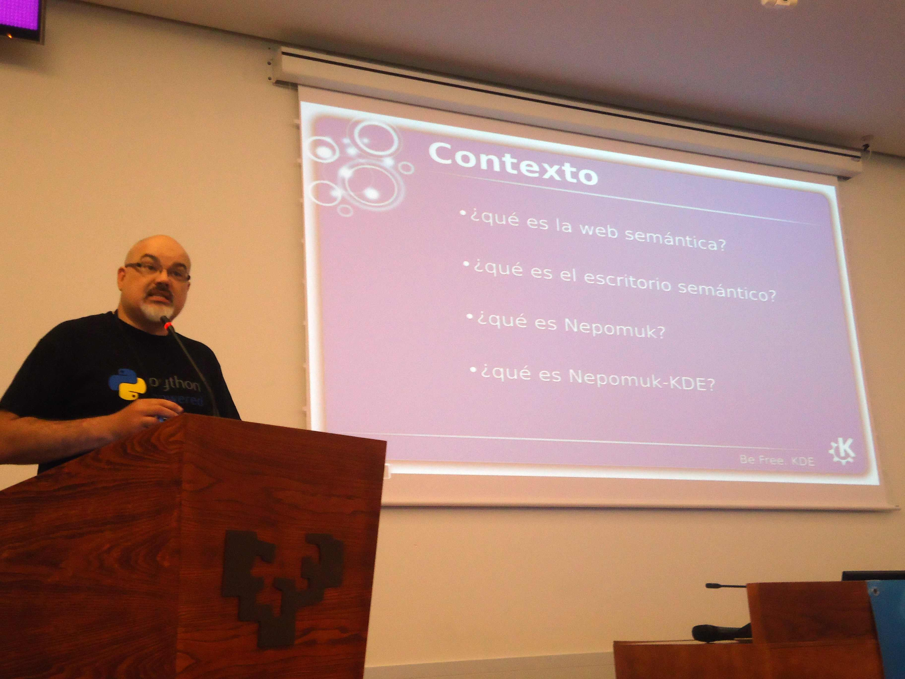
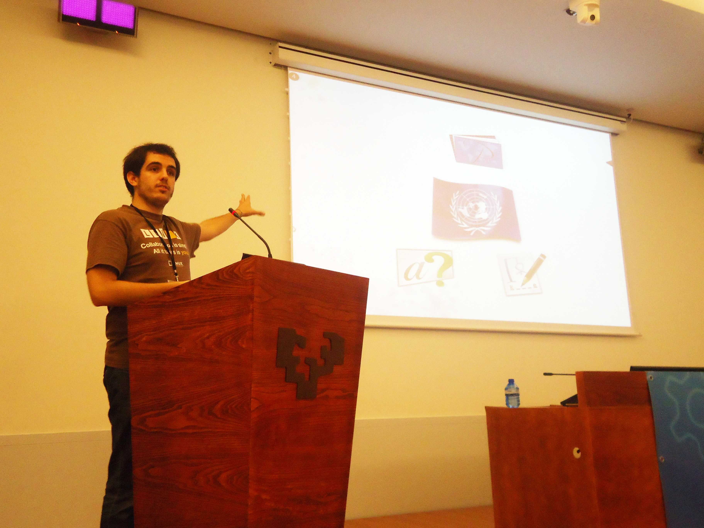

Entre el 11 y el 12 de julio del 2013 más de 50 desarrolladores, artistas, traductores y entusiastas de KDE participaron en el Akademy-es 2013, la conferencia anual organizada por KDE España. Hubo una decena de charlas y presentaciones, todo un showcase sobre las nuevas tecnologías de Qt y QML. La sala Baroja de la Universidad Politécnica del País Vasco se convirtió en el epicentro de la comunidad KDE española, como antesala a la celebración de la conferencia mundial sobre KDE, el Akademy, del 13 al 19 de julio, y del Qt Contributor Summit, del 15 al 16.
Akademy-es 2013
Bilbao acogió dos días de charlas y hacking en el mayor evento estatal sobre KDE.
Día I
KDE y Qt5
El presidente de KDE España, Aleix Pol, intervino en la ceremonia de apertura junto a Àlex Fiestas y Eunate Ramírez, gerente de la ESLE. La charla estuvo enfocada a la necesaria colaboración entre las empresas, los usuarios, y por supuesto, los desarrolladores.

Aleix Pol, presidente de KDE España, inauguró el Akademy.
Desarrollando KDE fue el título de la conferencia inaugural, en la que Aleix hizo una introducción a las principales herramientas necesarias para el desarrollo de KDE. Git, CMake, y Qt fueron las protagonistas de una disertación centrada en mostrar a los desarrolladores cómo empezar a dar sus primeros pasos en KDE, ya sea arreglando pequeños bugs, mandando parches, ¡incluso creando nuevas aplicaciones!
Albert Astals siguió la senda técnica con KDE y Qt5. El split de KDE Frameworks 5 permitirá un escritorio más rápido y modular, eso sí, todavía no hay fecha para su lanzamiento. También hubo un poco de historia: Trolltech, Nokia, Digia y la ansiada libertad de Qt.

KDE e.V. es la asociación sin ánimo de lucro que gestiona la infraestructura del proyecto KDE.
El tesorero de KDE e.V., Agustín Betancourt, aclaró muchas dudas sobre esta organización en su charla Qué es y para qué sirve KDE e.V. Esta asociación efectúa la gestión de la infraestructura de KDE, la gestión económica y financiera -un tercio va a financiar viajes y ayudas a desarrolladores-, además de la representatividad en instituciones y organismos (KDE Connect). Un tema muy interesante, la FLA, un mecanismo jurídico desarrollado por la FSF europea para asegurar la continuidad de los proyectos de software libre y su retorno a la comunidad en caso de un abandono por parte del desarrollador.
KDE España representa a KDE en nuestro país y es pionera jurídica, económica y formalmente.
Tras el obligatorio descanso comenzaron las intensas charlas relámpago, en las que en menos de 5 minutos se presenta una característica, aplicación o funcionalidad. Albert Astals habló de la nuevas anotaciones en Okular, KRunner fue el tema elegido por Àlex Fiestas. Aleix Pol desveló el desarrollo de Muon Discover 2.0, en el que un miembro de Chakra está implementando el soporte para PackageKit. Dario Freddi introdujo las nuevas características de C++11 y Lambdas. Víctor Blázquez enseñó Kdenlive en vivo y en directo, y demostró su potencial para editar vídeos. Por último Albert Vaca mostró los progresos de su GSOC, sincronización entre Android y KDE
Àlex Fiestas puso el broche de oro al primer día del Akademy-es. Participando en KDE fue el título de una charla emocionante, profunda y personal. Fiestas fue desgranando sus motivaciones para implicarse en el proyecto KDE, desgranando su historia personal desde su primera experiencia con EyeOS hasta que finalmente recaló en KDE. Más tarde hizo alusión a casos concretos de personas que no entraron en el mundo KDE como desarrolladores, una rara avis que esperemos, aumente con el tiempo. De traductores a responsables de distros, community managers, periodistas, artistas…

Sea lo que sea que estés buscando KDE te lo dará, y si no lo sabes también.
Día II
Plasma Active y clausura
Son las 10.30 de la mañana y el edificio Bizkaia Aretoa ya está preparado para la jornada de clausura del Akademy-es. Una decena de charlas sobre temas tan variados como Nepomuk, QML, virtualización o interfaz de usuario conforman el plato fuerte del evento anual de KDE más importante de España.

El creador de Caledonia planteó nuevos retos para el diseño de KDE.
La charla de Malcer inauguró el programa, que esta vez fue de mañana y tarde. Diseño y experiencia de usuario en KDE fue el título de la ponencia, en la que el creador de Caledonia hizo una reflexión sobre el estado del diseño en KDE. Se apuntaron los principales problemas, como la falta de coherencia en las aplicaciones, interfaces sobrecargadas de opciones, o la necesidad de un gran cambio visual para el próximo KDE 5. Sin embargo, no todo fueron cosas negativas, también hubieron propuestas: potenciar el ‘botón universal’ al estilo Appmenu, pero hacerlo similar al de Firefox, aumentar la presencia de los iconos, apostar por una interfaz más minimalista, y esconder las opciones de configuración.
Baltasar Ortega, responsable del KDE Blog, fue el siguiente en pasar por la sala Baroja del Bizkaia Aretoa. Es el momento de KDE4 fue un resumen de las características del entorno de escritorio KDE, y de las numerosas utilidades que lo acompañan: Klipper, KSnapshot, Digikam, Dolphin. Baltasar hizo referencia a la evolución constante de KDE, con el lanzamiento de una major version cada 6 meses.

José Millán apostó por el uso del software libre en la administración.
Al volver del coffee break hubo una charla técnica. José Millán, desarrollador de Opentia y tesorero de KDE España hizo un esfuerzo por reafirmar la importancia del software libre en las administraciones públicas. Su presentación Migración a Sofware Libre con KDE y NX en administraciones públicas demostró que las tecnologías necesarias para la migración a software libre están ahí, y permiten cosas como que el ayuntamiento de Múnich haya desplegado en 14.000 de sus 15.000 terminales equipos con GNU/Linux, ahorrándose más de 10 millones de euros en licencias en un proceso que se inició en el 2005.
NX es un software de virtualización de escritorios remotos con baja latencia, permitiendo que un usuario con un ordenador poco potente se conecte a un servidor ubicado en cualquier parte del mundo, y tenga acceso a su escritorio con todas sus aplicaciones, procesos y archivos de manera instantánea. Necesita muy poco ancho de banda y está disponible para los principales sistemas operativos (próximamente para Android).

Plasma Active es un escritorio diseñado para tablets que utiliza toda la potencia de QML
Baltasar Ortega subió de nuevo al estrado para presentar Plasma Active. La apuesta del equipo KDE para dispositivos táctiles va mejorando cada día y el lanzamiento de la cuarta versión, con numerosas novedades y mejoras, está cada vez más cerca. Con la ayuda de un ExoPC Baltasar demostró el camino acertado que está tomando Plasma en las tablets; cada vez hay más aplicaciones con interfaz touch (Marble, Kontact), y las Actividades parecen calzar perfectamente en el workflow. Por lo que pudimos comprobar allí, el tema gráfico está siendo cuidado con esmero, pero todavía hay algunas incoherencias en la interfaz y detalles por pulir. Bodega está dando visos de convertirse en el AppStore de KDE, un buen paso para abrir el público potencial del proyecto. Si todo sale bien Vivaldi puede convertirse en un serio competidor de las tablets con Android.
Ramón Miranda demostró todo el potencial de Krita en su charla.
El equipo de Krita también estuvo presente en el Akademy-es, con la presentación del Krita Training DVD Muses. Ramón Miranda, responsable del proyecto, hizo un repaso por las killer features de Krita y lo que está por venir: canvas infinito, mirror painting, warp transform… Muses es una tutorial de pintura digital enfocado a la creación de personajes y al manejo de las principales herramientas del programa. La joya de la corona de la suite Calligra se ha convertido en una de las aplicaciones más prometedoras de KDE: Double Negative, un afamado estudio de VFX basado en Londres, usa Krita en sus superproducciones; se ha empleado en películas como Dark Knight Rises o John Carter.
El Akademy-es tomó su recta final con las charlas de la tarde. Las numerosas lightning talks programadas y tecnologías como Nepomuk y QML protagonizaron el último calentamiento antes del Akademy: ya estaban en Bilbao una decena de desarrolladores de KDE venidos de todas partes del mundo.
Las charlas relámpago comenzaron con otra intervención de Baltasar Ortega, que presentó KDE Blog, el medio de referencia de KDE en español. Tras más de 2.000 entradas (una al día como mínimo), Baltasar ha logrado difundir las bondades de KDE y el software libre a miles de usuarios. Unas 800 visitas llegan cada día a un proyecto que empezó con el objetivo de difundir KDE de una manera sencilla, destinada al usuario de a pie. Y vaya si lo ha conseguido.
Daniel Gutiérrez habló sobre Dolphin, el fantástico PDF Servicemenu, las Actividades y ownCloud, el servicio de nube en línea que surgió en el seno de KDE. Es de destacar su gran labor como miembro local del Akademy.
El secretario de KDE España, Víctor Blázquez, hizo una presentación titulada Teclas Calientes en KDE, en la que demostró el gran potencial y la extrema configurabilidad de los atajos de teclado en el escritorio KDE. Es tal el grado de versatilidad y complejidad que la charla pareció técnica en algunos instantes. Además hizo otra presentación en la que demostró todo el potencial de Kdenlive.
Franck Arrecot, introdujo KPeople, una librería que acercará el concepto de ‘persona’ a nuestros escritorios. Su combinación con Telepathy y la suite PIM parece un sueño hecho realidad.

Web-Miner extrae datos de Internet y los envía a Nepomuk.
Ignacio Serantes, experto en Python y apasionado de KDE, inauguró el turno de las presentaciones más largas. El responsable de Nepoogle presentó Nepomuk Web-Miner, una herramienta que combina la potencia de Nepomuk con la de la web. Gracias a la conexión a bases de datos como IMBD, o LastFM, Web-Miner obtiene metadatos de películas, series de televisión, música o documentos académicos y los añade al repositorio de Nepomuk. Pero no sólo eso, ya que cuenta con una interfaz que permite visualizar estos resultados de una manera sencilla. Si tenemos una película almacenada en nuestro ordenador Web-Miner buscará la sinopsis, el tráiler, y además nos mostrará la información relativa a los actores. ¡Y si uno de esos actores resulta ser cantante y tenemos temas suyos en el disco duro, Web-Miner se encargará de ordenar y mostrar esa información en la misma pantalla!
Tras la intensa presentación de Ignacio tuvo lugar la foto de grupo del Akademy-es, y un pequeño descanso. La foto la podéis encontrar en esta dirección (ojo, ¡es muy grande!).
El mago de Okular, Albert Astals, realizó la siguiente ponencia. QML, Qt Quick y otros monstruos declarativos fue el título de una charla en la que hubo programación on the fly, risas y muchos ejemplos prácticos del uso de QML y Qt Quick. Aviso para navegantes: cuando crees que usas QML empleas Qt Quick, ya que es una capa que va por encima de QML.

El proyecto KDE Edu promueve el software libre en la escuela.
El cierre del Akademy-es tuvo como protagonista a Aleix Pol, presidente de KDE España, que también estuvo encargado de abrir el evento. Su presentación sobre KDE Edu hizo un recorrido por los principales programas que componen la ambiciosa suite educativa de KDE. Tiene cubiertas las tres etapas: desde aplicaciones construidas para los más pequeños, hasta herramientas destinadas a universitarios e investigadores, pasando, claro está, por soluciones pensadas en la educación secundaria. Geografía, matemáticas, física… El espectro de materias que abarca KDE Edu es inmenso, gracias a la veintena de aplicaciones que lo componen: desde pesos pesados como Marble hasta nuevos desarrollos como Pairs. En su precioso sitio web las tienen todas categorizadas, por ciclo educativo, y por materias. Un nuevo reto: implementar las interfaces touch para avanzar a la escuela del futuro ¿o ya es la del presente?